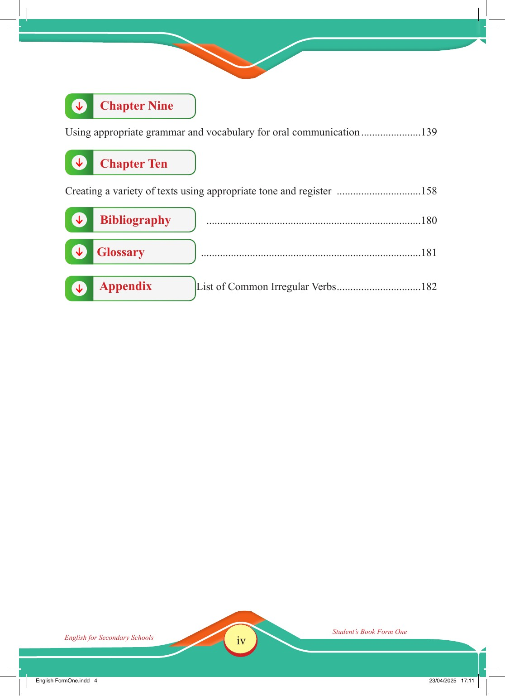

Accessible text transcript - page iv
Use the reader's read-aloud controls or select an individual segment below.
Front matter page four, shown as Roman numeral iv. Chapter Nine Using appropriate grammar and vocabulary for oral communication 139 Chapter Ten Creating a variety of texts using appropriate tone and register 158 Bibliography 180 Glossary 181 Appendix List of Common Irregular Verbs 182 English for Secondary Schools Student’s Book Form One English FormOne.indd 4 23/04/2025 17:11 Return to the page image